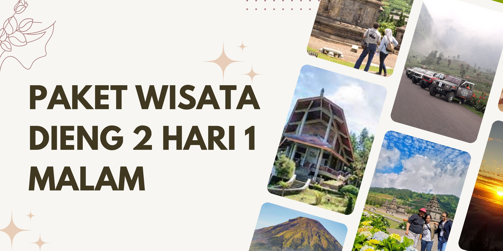

Paket Wisata Dieng 2 Hari 1 Malam – Pengalaman Lengkap Menyapa Alam & Budaya Dieng
Paket ini dirancang untuk Anda yang ingin menikmati suasana Dieng lebih lama, dengan perjalanan selama dua hari satu malam. Anda akan mendapatkan pengalaman eksplorasi yang lebih mendalam, mengunjungi destinasi-destinasi utama hingga spot tersembunyi, serta sempat menikmati suasana malam dan pagi hari di pegunungan Dieng yang sejuk. Dengan menginap satu malam, perjalanan terasa lebih santai dan waktu kunjungan ke tiap destinasi bisa lebih optimal.
Semua kebutuhan utama wisata sudah kami atur, mulai dari transportasi, akomodasi, konsumsi, hingga tiket masuk dan pemandu wisata. Paket ini cocok untuk keluarga, rombongan kecil, ataupun Anda yang ingin liburan tanpa repot mengurus detail perjalanan.
Fasilitas
- Kendaraan: Armada nyaman dan bersih, siap mengantar keliling Dieng dan Wonosobo
- Penginapan 1 malam: Homestay/hotel lokal dengan fasilitas bersih, pilihan kamar privat atau sharing sesuai permintaan
- Layanan makan 4x: Sarapan, makan siang, makan malam, dan snack/cemilan lokal selama perjalanan
- Tiket masuk destinasi wisata: Semua tiket objek wisata yang ada di itinerary sudah termasuk dalam paket
- Driver: Pengemudi ramah dan hafal rute wisata Dieng
- Tour guide: Pemandu berpengalaman yang akan membantu dan berbagi info selama trip
- BBM: Biaya bahan bakar kendaraan seluruh perjalanan sudah ditanggung
- Parkir: Gratis biaya parkir di semua destinasi
- Tol: Termasuk biaya tol untuk rute tercepat dan paling nyaman
- Air mineral: Air minum selama kegiatan
Destinasi
- Bukit Sikunir: Tempat menikmati sunrise dengan panorama pegunungan, suasana pagi yang khas
- Telaga Cebong: Danau tenang di kaki Bukit Sikunir, spot relaksasi dan foto
- Kawah Sikidang: Fenomena alam kawah aktif, mudah diakses dan jadi favorit wisatawan
- Komplek Candi Arjuna: Kompleks candi Hindu yang bersejarah, dikelilingi lanskap dataran tinggi
- Batu Ratapan Angin: Tempat ikonik untuk menikmati pemandangan Telaga Warna dan sekitarnya dari ketinggian
- Dieng Plateau Theater: Mini theater yang menampilkan film dokumenter wisata dan budaya Dieng
- Taman Pintu Langit: Taman tematik kekinian dengan berbagai spot foto dan sudut santai
- Telaga Menjer: Danau luas di lereng Gunung Pakuwaja, cocok untuk foto dan menikmati udara segar
- Perkebunan Teh: Area hijau membentang, bisa melihat aktivitas petani teh dan foto panorama alam
- Sentra Oleh-oleh dan Kuliner: Tempat belanja dan mencicipi kuliner lokal khas Dieng & Wonosobo
Itinerary
Hari ke-1
| Aktivitas | Deskripsi |
|---|---|
| Penjemputan & perjalanan menuju Dieng | Start dari meeting point sesuai kota asal, perjalanan menuju Wonosobo/Dieng, lalu makan siang bersama |
| Taman Pintu Langit | Bersantai di taman tematik dengan spot foto unik, menikmati udara segar |
| Dieng Plateau Theater | Menonton film dokumenter untuk mengenal Dieng lebih dekat |
| Kawah Sikidang | Menyaksikan aktivitas kawah dan fenomena alam geothermal khas Dieng |
| Komplek Candi Arjuna | Jelajah kompleks candi bersejarah dengan pemandangan pegunungan |
| Batu Ratapan Angin | Spot foto populer dengan view Telaga Warna & Pengilon dari ketinggian |
| Telaga Menjer | Singgah di danau luas yang tenang, suasana asri untuk relaksasi |
| Perkebunan Teh | Melihat hamparan kebun teh dan aktivitas petani lokal |
| Makan malam & check-in penginapan | Check-in homestay/hotel, istirahat, makan malam bersama |
| Acara bebas | Waktu santai, bisa jalan-jalan malam sekitar penginapan atau istirahat |
Hari ke-2
| Aktivitas | Deskripsi |
|---|---|
| Bukit Sikunir & Telaga Cebong | Berangkat pagi ke Bukit Sikunir untuk menikmati sunrise, dilanjutkan dengan menikmati Telaga Cebong |
| Sarapan di penginapan | Kembali ke penginapan untuk sarapan, istirahat sebentar |
| Sentra Oleh-oleh dan Kuliner | Belanja oleh-oleh khas Dieng, dan bisa mencicipi kuliner lokal |
| Telaga Menjer | Singgah di danau luas yang tenang, suasana asri untuk relaksasi |
| Perkebunan Teh | Melihat hamparan kebun teh dan aktivitas petani lokal |
| Check-out & perjalanan pulang | Packing, check-out dari penginapan, lalu diantar kembali ke kota asal/meeting point awal |
Panduan Perjalanan
Cuaca Dieng sejuk dan kadang berkabut, terutama pagi dan malam. Disarankan membawa pakaian hangat, alas kaki yang nyaman, dan perlengkapan pribadi. Semua destinasi sudah dipilih agar mudah diakses tanpa perlu trekking berat. Jika ada preferensi kamar atau kebutuhan khusus, silakan informasikan saat reservasi.
Meeting Point (Mepo)
Meeting point bisa dari Wonosobo, Jogja, Purwokerto, Semarang, Solo, serta area lain di Jawa Tengah & DIY. Penjemputan bisa di bandara, stasiun, hotel, atau lokasi lain sesuai kesepakatan saat booking.
Pertanyaan yang Sering Ditanyakan
Bisa trip privat?
Bisa, semua paket dapat dibuat privat sesuai kebutuhan peserta, baik untuk keluarga maupun grup kecil.
Bisa mulai dari kota selain Wonosobo?
Meeting point dapat disesuaikan dari Jogja, Purwokerto, Semarang, Solo, atau kota lain di Jawa Tengah & DIY.
Akomodasi seperti apa?
Menginap di homestay atau hotel lokal yang sudah diseleksi, fasilitas bersih dan nyaman.
Termasuk makan dan tiket wisata?
Paket sudah termasuk makan 4x (sarapan, makan siang, makan malam, snack) dan tiket masuk seluruh destinasi di itinerary.
Bagaimana jika cuaca hujan?
Perjalanan tetap berjalan, jadwal bisa disesuaikan dengan kondisi agar tetap nyaman.
Bisa request kamar privat atau upgrade hotel?
Bisa, silakan sampaikan ke tim reservasi saat pemesanan.
Lihat Gallery Foto dan Video →
Sudah dipercaya ribuan peserta sejak 2012. Konsultasi gratis, tanpa komitmen, dan bisa menyesuaikan kebutuhan trip keluarga, group, atau instansi.